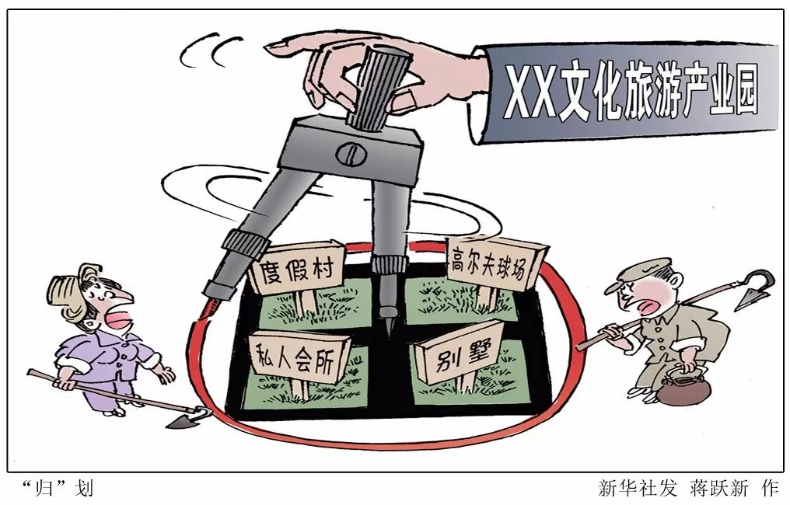
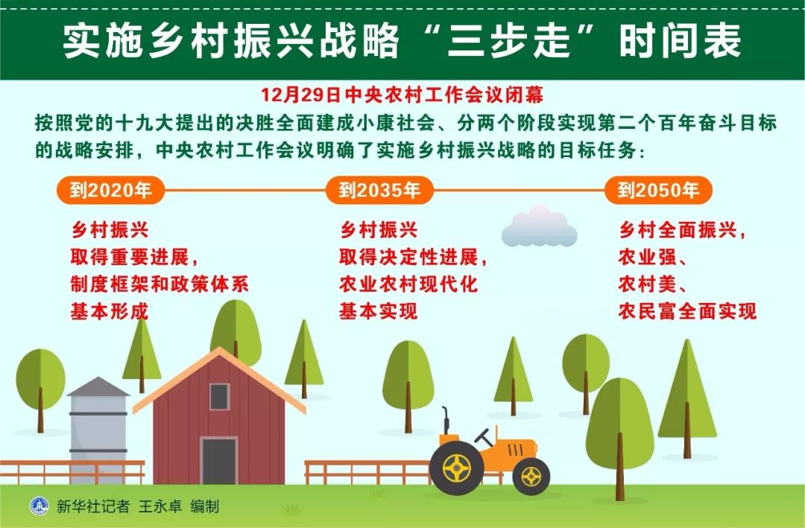

商务合作 QQ:340833389
抖音:28637558005  意见反馈
意见反馈
-
-
“剃头挑子一头热”不能振兴乡村！
原标题:基层干部累死累活，村民却在袖手旁观：“剃头挑子一头热”不能振兴乡村!
实施乡村振兴战略，是新时代“三农”工作的总抓手。当前在一些地方，乡村振兴战略甫一起步，就存在跑偏苗头：乡村振兴“样板化”、建设主体“错位化”、发展取向“非农化”。这些倾向与中央倡导的战略要求是否相符？与农民群众的期待是否合拍？
乡村振兴迫切需要凝聚力量，群建共治，发挥农民主体作用，让农民群众唱主角。但目前不少地方是政府单方面地主抓、主推一些需要共同努力的乡村事项，农民群众反而缺席、失语，漠然旁观。
政府规划宏伟，村民不当回事
记者在中西部一些乡镇采访时，有的党政主要领导特别乐于介绍当地的规划、建设和发展，都有很系统的思路和很超前的理念，并且总结出一套模式，或用数字代表，或用文字概括。记者走村串户采访发现，实际上，村民鲜有人知道，甚至一些基层干部也搞不清来龙去脉。
在贵州省北部一个经济基础较好的乡镇，镇里的一位主要领导说，现在实施乡村振兴战略，要实现“一村一品”，规划发展产业4.8万亩，涉及几十家企业，目标是打造成“春赏花，夏纳凉，秋品果，冬看雪”的理想之地。
“人在花园里，花在公园中。坡坡花果山，田田蔬菜园。户户农家乐，人人小康家。”这位负责人向半月谈记者介绍了自己的一套乡村建设理念，称规划是第一位的，要有长远眼光、大作为。这个乡镇的村民却普遍表示，并不清楚当地党委政府的规划，如今村村都在搞建设，很少征求村民意见。
村民没有参与感，自然也难以体会到获得感。在贵州某乡镇，工程建设如火如荼，清淤泥，修建筑。当地正按照“农民自有闲置房改经营房、自留地改体验地、老百姓改服务员、保青山留乡愁”的模式推进特色民宿发展，由公司统一租赁、统一装修、统一经营管理村寨农民闲置住房，打造独具特色的乡村旅游名片。
记者一走进村庄，就有村民站出来表示不满。当地干部和旅游公司一位负责人解释，个别村民喜欢找事，但绝大多数村民是满意的。
记者在河南某县发现，当地加大力度建设美丽乡村，在村里建了党史馆和村史馆，虽然没有特别豪华的设施和投入，但建设得颇有现代城市展览馆的样子，同时还建成了当地戏曲、名人的历史展览馆。
然而，在村中走访发现，一些群众的房子仍然很破旧，村道还是狭窄坑洼，垃圾随处可见，和设施先进甚至略显气派的村史馆比起来，整体村貌让人更有落差感。
当地群众对这些政府所倡导的乡村文化建设没有太多好评。有的说，这些地方建好了以后从来没去过，“就摆那几样东西有啥好看的，还不如建个广场，说话还有地方待”；“建这些都给外人看的，村里人没人当回事”。

“干部干、群众看”，代替包办现象突出
在政府强力主导、公司强势执行之下，农民群众的意见在一些地方乡村建设中“被绝缘”。村民认为，重金打造出来的村容村貌、大铺摊子搞出的政绩项目，又与他们有什么关系呢？
一些基层干部告诉记者，过去，村里修条路，家家户户都会积极投工投劳，十分热闹；现在，农民都忙着在外打工挣钱，村里的建设主要靠政府推动。半月谈记者在河南一村庄发现，虽然村里正热火朝天地改水、改厕、改路，却少见村民投工投劳的身影，村庄整治基本上靠政府请人在做。
许多基层干部反映：“现在能让老百姓配合你就不错了，还指望他帮着你做工作？”村民的表现却是：“这是政府的事，就应该干部来做。我们为什么要出钱出力？”
“基层干部为了做工作累死累活，村民却在一旁看，这不仅增加了政府的治理成本，也是一种角色的错位，并由此引发了许多新问题。”武汉大学中国乡村治理研究中心副教授王德福认为，乡村振兴不能政府包办，“剃头挑子一头热”。

乡村振兴须激活农民首创精神和内生动力
农民主体作用发挥不足，有农民自身的原因，也有政府的责任。长期以来，一些地方政府习惯于强势介入基层自治事务，乡村基础建设、公共服务难以走出大包大揽的思维方式，“政府主导，社会参与”的工作格局往往只剩下“政府主导”式的单打独斗。
振兴乡村，农民其实有强烈愿望参与其中，但一些地方未能正确处理以政府为引导、以农民为主体的关系，缺乏有效措施，农民参与不进来，其积极性自然也就发挥不出来。
在乡村振兴中，农民主人翁的地位不容动摇和错位。王德福等专家认为，政府的工作应“以人民为中心”，更多地问需于民、问计于民、服务于民。这就需要基层工作创新群众交流通道，打造百姓参与平台，建立基层服务机制。
激活农民的乡村振兴主体地位，需要提供更多条件，给农民赋权、放权。政府重在把握宏观方向，具体规划建设、上项目，可由市场与村民自主衔接。这既可避免乡村“千篇一律”“千城一面”，又能激发村民的首创精神和内生动力。
-